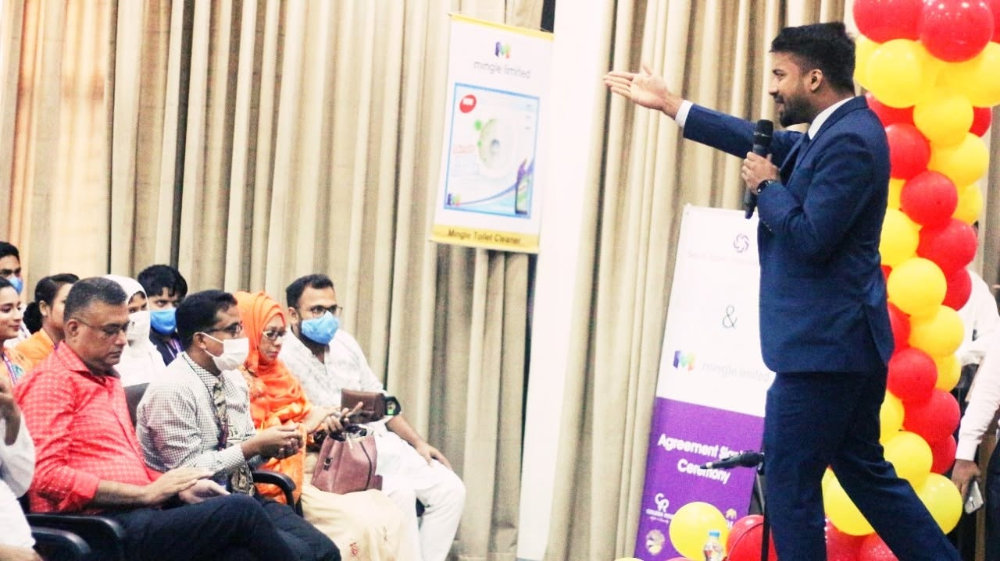

01
Career Consulting
Understand where you are, where you want to go and what needs to happen next.
Explore Career Consulting →I help professionals make better career decisions, build credible personal brands and position themselves for the opportunities they want next.



Career growth works best when direction, positioning and visibility reinforce one another. My work connects all three.
Understand where you are, where you want to go and what needs to happen next.
Explore Career Consulting →Turn expertise, experience and ambition into a clear, credible and visible professional identity.
Explore Personal Branding →Practical conversations on careers, personal branding, leadership positioning and the future of work.
Explore Speaking →Many talented professionals are short of clarity, positioning or visibility.
What should my next career move be?
What should I be known for professionally?
Does my profile represent my actual value?
How do I become more credible and visible?
How do I prepare myself for the next level?
Personal branding is not about pretending to be bigger than you are. It is about making your real value easier to understand, trust and remember.
I help professionals understand their value, make better career decisions and position themselves to be known for the right things.
That means building a professional presence where your profile, communication, appearance, digital footprint, network and reputation tell a consistent story.
Read the story behind the work →